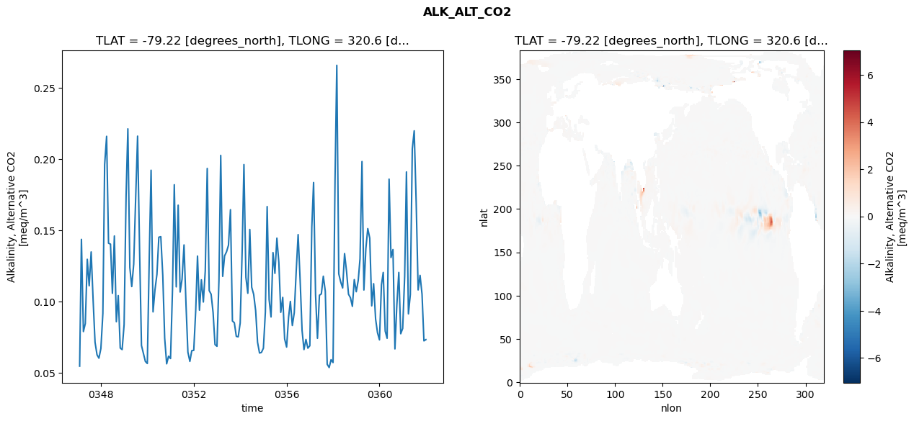
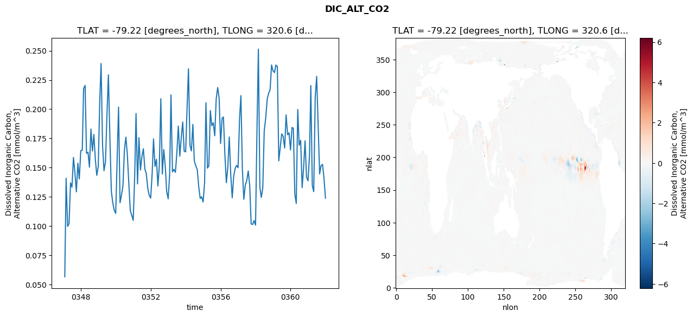
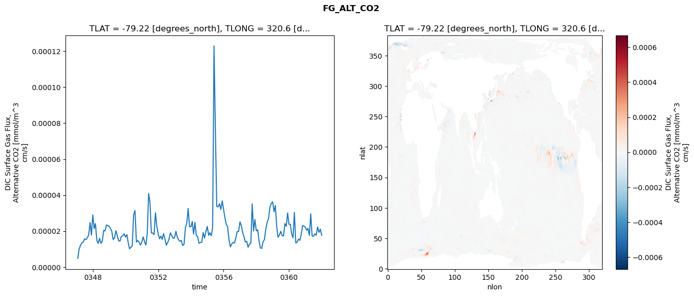
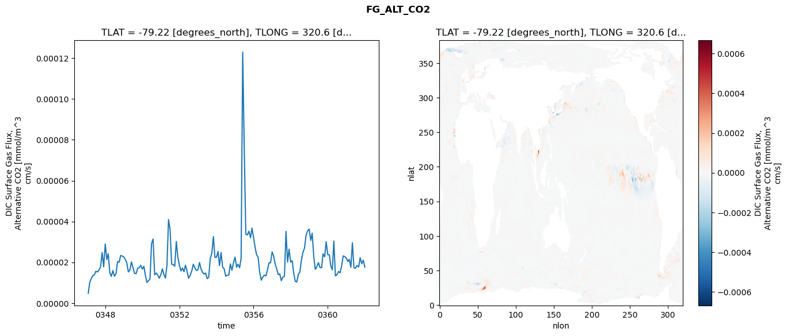
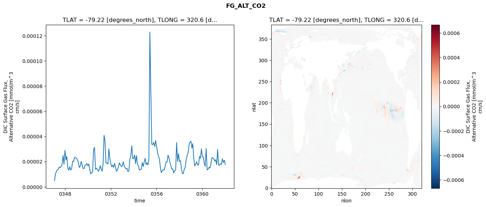

glb-dor_North_Atlantic_basin_009_1999-01-01_00036#
Simulation details#
Case: smyle.cdr-atlas-v0.glb-dor_North_Atlantic_basin_009_1999-01-01_00036.001
Basin: North_Atlantic_basin
Polygon: 9.0
Start date: 1999-01
Show code cell source Hide code cell source
import xarray as xr
import matplotlib.pyplot as plt
Show code cell source Hide code cell source
zarr_store = "/path/to/zarr/store"
# Parameters
zarr_store = "/global/cfs/projectdirs/m4746/Projects/Ocean-CDR-Atlas-v0/data/validation/smyle.cdr-atlas-v0.glb-dor_North_Atlantic_basin_009_1999-01-01_00036.001.validation.zarr"
Show code cell source Hide code cell source
%%time
ds_o = xr.open_zarr(zarr_store).compute()
ds_o
CPU times: user 687 ms, sys: 486 ms, total: 1.17 s
Wall time: 1.49 s
<xarray.Dataset> Size: 2MB
Dimensions: (nlat: 384, nlon: 320, time: 180)
Coordinates:
TLAT float64 8B -79.22
TLONG float64 8B 320.6
ULAT float64 8B -78.95
ULONG float64 8B 321.1
* time (time) object 1kB 0347-02-01 00:00:00 ... 0362-01-01 0...
z_t float32 4B 500.0
Dimensions without coordinates: nlat, nlon
Data variables:
ALK_ALT_CO2_diff (nlat, nlon) float32 492kB nan nan nan ... nan nan nan
ALK_ALT_CO2_rmse (time) float64 1kB 0.05489 0.1437 ... 0.07262 0.07349
DIC_ALT_CO2_diff (nlat, nlon) float32 492kB nan nan nan ... nan nan nan
DIC_ALT_CO2_rmse (time) float64 1kB 0.05678 0.141 0.09982 ... 0.141 0.124
ECOSYS_IFRAC_diff (nlat, nlon) float32 492kB nan nan nan ... nan nan nan
ECOSYS_IFRAC_rmse (time) float64 1kB 0.0001557 0.0002791 ... 0.0004885
FG_ALT_CO2_diff (nlat, nlon) float32 492kB nan nan nan ... nan nan nan
FG_ALT_CO2_rmse (time) float64 1kB 4.8e-06 1.004e-05 ... 1.764e-05xarray.Dataset
- nlat: 384
- nlon: 320
- time: 180
- TLAT()float64-79.22
- long_name :
- array of t-grid latitudes
- units :
- degrees_north
array(-79.22052261)
- TLONG()float64320.6
- long_name :
- array of t-grid longitudes
- units :
- degrees_east
array(320.56250892)
- ULAT()float64-78.95
- long_name :
- array of u-grid latitudes
- units :
- degrees_north
array(-78.95289509)
- ULONG()float64321.1
- long_name :
- array of u-grid longitudes
- units :
- degrees_east
array(321.12500894)
- time(time)object0347-02-01 00:00:00 ... 0362-01-...
- bounds :
- time_bound
- long_name :
- time
array([cftime.DatetimeNoLeap(347, 2, 1, 0, 0, 0, 0, has_year_zero=True), cftime.DatetimeNoLeap(347, 3, 1, 0, 0, 0, 0, has_year_zero=True), cftime.DatetimeNoLeap(347, 4, 1, 0, 0, 0, 0, has_year_zero=True), cftime.DatetimeNoLeap(347, 5, 1, 0, 0, 0, 0, has_year_zero=True), cftime.DatetimeNoLeap(347, 6, 1, 0, 0, 0, 0, has_year_zero=True), cftime.DatetimeNoLeap(347, 7, 1, 0, 0, 0, 0, has_year_zero=True), cftime.DatetimeNoLeap(347, 8, 1, 0, 0, 0, 0, has_year_zero=True), cftime.DatetimeNoLeap(347, 9, 1, 0, 0, 0, 0, has_year_zero=True), cftime.DatetimeNoLeap(347, 10, 1, 0, 0, 0, 0, has_year_zero=True), cftime.DatetimeNoLeap(347, 11, 1, 0, 0, 0, 0, has_year_zero=True), cftime.DatetimeNoLeap(347, 12, 1, 0, 0, 0, 0, has_year_zero=True), cftime.DatetimeNoLeap(348, 1, 1, 0, 0, 0, 0, has_year_zero=True), cftime.DatetimeNoLeap(348, 2, 1, 0, 0, 0, 0, has_year_zero=True), cftime.DatetimeNoLeap(348, 3, 1, 0, 0, 0, 0, has_year_zero=True), cftime.DatetimeNoLeap(348, 4, 1, 0, 0, 0, 0, has_year_zero=True), cftime.DatetimeNoLeap(348, 5, 1, 0, 0, 0, 0, has_year_zero=True), cftime.DatetimeNoLeap(348, 6, 1, 0, 0, 0, 0, has_year_zero=True), cftime.DatetimeNoLeap(348, 7, 1, 0, 0, 0, 0, has_year_zero=True), cftime.DatetimeNoLeap(348, 8, 1, 0, 0, 0, 0, has_year_zero=True), cftime.DatetimeNoLeap(348, 9, 1, 0, 0, 0, 0, has_year_zero=True), cftime.DatetimeNoLeap(348, 10, 1, 0, 0, 0, 0, has_year_zero=True), cftime.DatetimeNoLeap(348, 11, 1, 0, 0, 0, 0, has_year_zero=True), cftime.DatetimeNoLeap(348, 12, 1, 0, 0, 0, 0, has_year_zero=True), cftime.DatetimeNoLeap(349, 1, 1, 0, 0, 0, 0, has_year_zero=True), cftime.DatetimeNoLeap(349, 2, 1, 0, 0, 0, 0, has_year_zero=True), cftime.DatetimeNoLeap(349, 3, 1, 0, 0, 0, 0, has_year_zero=True), cftime.DatetimeNoLeap(349, 4, 1, 0, 0, 0, 0, has_year_zero=True), cftime.DatetimeNoLeap(349, 5, 1, 0, 0, 0, 0, has_year_zero=True), cftime.DatetimeNoLeap(349, 6, 1, 0, 0, 0, 0, has_year_zero=True), cftime.DatetimeNoLeap(349, 7, 1, 0, 0, 0, 0, has_year_zero=True), cftime.DatetimeNoLeap(349, 8, 1, 0, 0, 0, 0, has_year_zero=True), cftime.DatetimeNoLeap(349, 9, 1, 0, 0, 0, 0, has_year_zero=True), cftime.DatetimeNoLeap(349, 10, 1, 0, 0, 0, 0, has_year_zero=True), cftime.DatetimeNoLeap(349, 11, 1, 0, 0, 0, 0, has_year_zero=True), cftime.DatetimeNoLeap(349, 12, 1, 0, 0, 0, 0, has_year_zero=True), cftime.DatetimeNoLeap(350, 1, 1, 0, 0, 0, 0, has_year_zero=True), cftime.DatetimeNoLeap(350, 2, 1, 0, 0, 0, 0, has_year_zero=True), cftime.DatetimeNoLeap(350, 3, 1, 0, 0, 0, 0, has_year_zero=True), cftime.DatetimeNoLeap(350, 4, 1, 0, 0, 0, 0, has_year_zero=True), cftime.DatetimeNoLeap(350, 5, 1, 0, 0, 0, 0, has_year_zero=True), cftime.DatetimeNoLeap(350, 6, 1, 0, 0, 0, 0, has_year_zero=True), cftime.DatetimeNoLeap(350, 7, 1, 0, 0, 0, 0, has_year_zero=True), cftime.DatetimeNoLeap(350, 8, 1, 0, 0, 0, 0, has_year_zero=True), cftime.DatetimeNoLeap(350, 9, 1, 0, 0, 0, 0, has_year_zero=True), cftime.DatetimeNoLeap(350, 10, 1, 0, 0, 0, 0, has_year_zero=True), cftime.DatetimeNoLeap(350, 11, 1, 0, 0, 0, 0, has_year_zero=True), cftime.DatetimeNoLeap(350, 12, 1, 0, 0, 0, 0, has_year_zero=True), cftime.DatetimeNoLeap(351, 1, 1, 0, 0, 0, 0, has_year_zero=True), cftime.DatetimeNoLeap(351, 2, 1, 0, 0, 0, 0, has_year_zero=True), cftime.DatetimeNoLeap(351, 3, 1, 0, 0, 0, 0, has_year_zero=True), cftime.DatetimeNoLeap(351, 4, 1, 0, 0, 0, 0, has_year_zero=True), cftime.DatetimeNoLeap(351, 5, 1, 0, 0, 0, 0, has_year_zero=True), cftime.DatetimeNoLeap(351, 6, 1, 0, 0, 0, 0, has_year_zero=True), cftime.DatetimeNoLeap(351, 7, 1, 0, 0, 0, 0, has_year_zero=True), cftime.DatetimeNoLeap(351, 8, 1, 0, 0, 0, 0, has_year_zero=True), cftime.DatetimeNoLeap(351, 9, 1, 0, 0, 0, 0, has_year_zero=True), cftime.DatetimeNoLeap(351, 10, 1, 0, 0, 0, 0, has_year_zero=True), cftime.DatetimeNoLeap(351, 11, 1, 0, 0, 0, 0, has_year_zero=True), cftime.DatetimeNoLeap(351, 12, 1, 0, 0, 0, 0, has_year_zero=True), cftime.DatetimeNoLeap(352, 1, 1, 0, 0, 0, 0, has_year_zero=True), cftime.DatetimeNoLeap(352, 2, 1, 0, 0, 0, 0, has_year_zero=True), cftime.DatetimeNoLeap(352, 3, 1, 0, 0, 0, 0, has_year_zero=True), cftime.DatetimeNoLeap(352, 4, 1, 0, 0, 0, 0, has_year_zero=True), cftime.DatetimeNoLeap(352, 5, 1, 0, 0, 0, 0, has_year_zero=True), cftime.DatetimeNoLeap(352, 6, 1, 0, 0, 0, 0, has_year_zero=True), cftime.DatetimeNoLeap(352, 7, 1, 0, 0, 0, 0, has_year_zero=True), cftime.DatetimeNoLeap(352, 8, 1, 0, 0, 0, 0, has_year_zero=True), cftime.DatetimeNoLeap(352, 9, 1, 0, 0, 0, 0, has_year_zero=True), cftime.DatetimeNoLeap(352, 10, 1, 0, 0, 0, 0, has_year_zero=True), cftime.DatetimeNoLeap(352, 11, 1, 0, 0, 0, 0, has_year_zero=True), cftime.DatetimeNoLeap(352, 12, 1, 0, 0, 0, 0, has_year_zero=True), cftime.DatetimeNoLeap(353, 1, 1, 0, 0, 0, 0, has_year_zero=True), cftime.DatetimeNoLeap(353, 2, 1, 0, 0, 0, 0, has_year_zero=True), cftime.DatetimeNoLeap(353, 3, 1, 0, 0, 0, 0, has_year_zero=True), cftime.DatetimeNoLeap(353, 4, 1, 0, 0, 0, 0, has_year_zero=True), cftime.DatetimeNoLeap(353, 5, 1, 0, 0, 0, 0, has_year_zero=True), cftime.DatetimeNoLeap(353, 6, 1, 0, 0, 0, 0, has_year_zero=True), cftime.DatetimeNoLeap(353, 7, 1, 0, 0, 0, 0, has_year_zero=True), cftime.DatetimeNoLeap(353, 8, 1, 0, 0, 0, 0, has_year_zero=True), cftime.DatetimeNoLeap(353, 9, 1, 0, 0, 0, 0, has_year_zero=True), cftime.DatetimeNoLeap(353, 10, 1, 0, 0, 0, 0, has_year_zero=True), cftime.DatetimeNoLeap(353, 11, 1, 0, 0, 0, 0, has_year_zero=True), cftime.DatetimeNoLeap(353, 12, 1, 0, 0, 0, 0, has_year_zero=True), cftime.DatetimeNoLeap(354, 1, 1, 0, 0, 0, 0, has_year_zero=True), cftime.DatetimeNoLeap(354, 2, 1, 0, 0, 0, 0, has_year_zero=True), cftime.DatetimeNoLeap(354, 3, 1, 0, 0, 0, 0, has_year_zero=True), cftime.DatetimeNoLeap(354, 4, 1, 0, 0, 0, 0, has_year_zero=True), cftime.DatetimeNoLeap(354, 5, 1, 0, 0, 0, 0, has_year_zero=True), cftime.DatetimeNoLeap(354, 6, 1, 0, 0, 0, 0, has_year_zero=True), cftime.DatetimeNoLeap(354, 7, 1, 0, 0, 0, 0, has_year_zero=True), cftime.DatetimeNoLeap(354, 8, 1, 0, 0, 0, 0, has_year_zero=True), cftime.DatetimeNoLeap(354, 9, 1, 0, 0, 0, 0, has_year_zero=True), cftime.DatetimeNoLeap(354, 10, 1, 0, 0, 0, 0, has_year_zero=True), cftime.DatetimeNoLeap(354, 11, 1, 0, 0, 0, 0, has_year_zero=True), cftime.DatetimeNoLeap(354, 12, 1, 0, 0, 0, 0, has_year_zero=True), cftime.DatetimeNoLeap(355, 1, 1, 0, 0, 0, 0, has_year_zero=True), cftime.DatetimeNoLeap(355, 2, 1, 0, 0, 0, 0, has_year_zero=True), cftime.DatetimeNoLeap(355, 3, 1, 0, 0, 0, 0, has_year_zero=True), cftime.DatetimeNoLeap(355, 4, 1, 0, 0, 0, 0, has_year_zero=True), cftime.DatetimeNoLeap(355, 5, 1, 0, 0, 0, 0, has_year_zero=True), cftime.DatetimeNoLeap(355, 6, 1, 0, 0, 0, 0, has_year_zero=True), cftime.DatetimeNoLeap(355, 7, 1, 0, 0, 0, 0, has_year_zero=True), cftime.DatetimeNoLeap(355, 8, 1, 0, 0, 0, 0, has_year_zero=True), cftime.DatetimeNoLeap(355, 9, 1, 0, 0, 0, 0, has_year_zero=True), cftime.DatetimeNoLeap(355, 10, 1, 0, 0, 0, 0, has_year_zero=True), cftime.DatetimeNoLeap(355, 11, 1, 0, 0, 0, 0, has_year_zero=True), cftime.DatetimeNoLeap(355, 12, 1, 0, 0, 0, 0, has_year_zero=True), cftime.DatetimeNoLeap(356, 1, 1, 0, 0, 0, 0, has_year_zero=True), cftime.DatetimeNoLeap(356, 2, 1, 0, 0, 0, 0, has_year_zero=True), cftime.DatetimeNoLeap(356, 3, 1, 0, 0, 0, 0, has_year_zero=True), cftime.DatetimeNoLeap(356, 4, 1, 0, 0, 0, 0, has_year_zero=True), cftime.DatetimeNoLeap(356, 5, 1, 0, 0, 0, 0, has_year_zero=True), cftime.DatetimeNoLeap(356, 6, 1, 0, 0, 0, 0, has_year_zero=True), cftime.DatetimeNoLeap(356, 7, 1, 0, 0, 0, 0, has_year_zero=True), cftime.DatetimeNoLeap(356, 8, 1, 0, 0, 0, 0, has_year_zero=True), cftime.DatetimeNoLeap(356, 9, 1, 0, 0, 0, 0, has_year_zero=True), cftime.DatetimeNoLeap(356, 10, 1, 0, 0, 0, 0, has_year_zero=True), cftime.DatetimeNoLeap(356, 11, 1, 0, 0, 0, 0, has_year_zero=True), cftime.DatetimeNoLeap(356, 12, 1, 0, 0, 0, 0, has_year_zero=True), cftime.DatetimeNoLeap(357, 1, 1, 0, 0, 0, 0, has_year_zero=True), cftime.DatetimeNoLeap(357, 2, 1, 0, 0, 0, 0, has_year_zero=True), cftime.DatetimeNoLeap(357, 3, 1, 0, 0, 0, 0, has_year_zero=True), cftime.DatetimeNoLeap(357, 4, 1, 0, 0, 0, 0, has_year_zero=True), cftime.DatetimeNoLeap(357, 5, 1, 0, 0, 0, 0, has_year_zero=True), cftime.DatetimeNoLeap(357, 6, 1, 0, 0, 0, 0, has_year_zero=True), cftime.DatetimeNoLeap(357, 7, 1, 0, 0, 0, 0, has_year_zero=True), cftime.DatetimeNoLeap(357, 8, 1, 0, 0, 0, 0, has_year_zero=True), cftime.DatetimeNoLeap(357, 9, 1, 0, 0, 0, 0, has_year_zero=True), cftime.DatetimeNoLeap(357, 10, 1, 0, 0, 0, 0, has_year_zero=True), cftime.DatetimeNoLeap(357, 11, 1, 0, 0, 0, 0, has_year_zero=True), cftime.DatetimeNoLeap(357, 12, 1, 0, 0, 0, 0, has_year_zero=True), cftime.DatetimeNoLeap(358, 1, 1, 0, 0, 0, 0, has_year_zero=True), cftime.DatetimeNoLeap(358, 2, 1, 0, 0, 0, 0, has_year_zero=True), cftime.DatetimeNoLeap(358, 3, 1, 0, 0, 0, 0, has_year_zero=True), cftime.DatetimeNoLeap(358, 4, 1, 0, 0, 0, 0, has_year_zero=True), cftime.DatetimeNoLeap(358, 5, 1, 0, 0, 0, 0, has_year_zero=True), cftime.DatetimeNoLeap(358, 6, 1, 0, 0, 0, 0, has_year_zero=True), cftime.DatetimeNoLeap(358, 7, 1, 0, 0, 0, 0, has_year_zero=True), cftime.DatetimeNoLeap(358, 8, 1, 0, 0, 0, 0, has_year_zero=True), cftime.DatetimeNoLeap(358, 9, 1, 0, 0, 0, 0, has_year_zero=True), cftime.DatetimeNoLeap(358, 10, 1, 0, 0, 0, 0, has_year_zero=True), cftime.DatetimeNoLeap(358, 11, 1, 0, 0, 0, 0, has_year_zero=True), cftime.DatetimeNoLeap(358, 12, 1, 0, 0, 0, 0, has_year_zero=True), cftime.DatetimeNoLeap(359, 1, 1, 0, 0, 0, 0, has_year_zero=True), cftime.DatetimeNoLeap(359, 2, 1, 0, 0, 0, 0, has_year_zero=True), cftime.DatetimeNoLeap(359, 3, 1, 0, 0, 0, 0, has_year_zero=True), cftime.DatetimeNoLeap(359, 4, 1, 0, 0, 0, 0, has_year_zero=True), cftime.DatetimeNoLeap(359, 5, 1, 0, 0, 0, 0, has_year_zero=True), cftime.DatetimeNoLeap(359, 6, 1, 0, 0, 0, 0, has_year_zero=True), cftime.DatetimeNoLeap(359, 7, 1, 0, 0, 0, 0, has_year_zero=True), cftime.DatetimeNoLeap(359, 8, 1, 0, 0, 0, 0, has_year_zero=True), cftime.DatetimeNoLeap(359, 9, 1, 0, 0, 0, 0, has_year_zero=True), cftime.DatetimeNoLeap(359, 10, 1, 0, 0, 0, 0, has_year_zero=True), cftime.DatetimeNoLeap(359, 11, 1, 0, 0, 0, 0, has_year_zero=True), cftime.DatetimeNoLeap(359, 12, 1, 0, 0, 0, 0, has_year_zero=True), cftime.DatetimeNoLeap(360, 1, 1, 0, 0, 0, 0, has_year_zero=True), cftime.DatetimeNoLeap(360, 2, 1, 0, 0, 0, 0, has_year_zero=True), cftime.DatetimeNoLeap(360, 3, 1, 0, 0, 0, 0, has_year_zero=True), cftime.DatetimeNoLeap(360, 4, 1, 0, 0, 0, 0, has_year_zero=True), cftime.DatetimeNoLeap(360, 5, 1, 0, 0, 0, 0, has_year_zero=True), cftime.DatetimeNoLeap(360, 6, 1, 0, 0, 0, 0, has_year_zero=True), cftime.DatetimeNoLeap(360, 7, 1, 0, 0, 0, 0, has_year_zero=True), cftime.DatetimeNoLeap(360, 8, 1, 0, 0, 0, 0, has_year_zero=True), cftime.DatetimeNoLeap(360, 9, 1, 0, 0, 0, 0, has_year_zero=True), cftime.DatetimeNoLeap(360, 10, 1, 0, 0, 0, 0, has_year_zero=True), cftime.DatetimeNoLeap(360, 11, 1, 0, 0, 0, 0, has_year_zero=True), cftime.DatetimeNoLeap(360, 12, 1, 0, 0, 0, 0, has_year_zero=True), cftime.DatetimeNoLeap(361, 1, 1, 0, 0, 0, 0, has_year_zero=True), cftime.DatetimeNoLeap(361, 2, 1, 0, 0, 0, 0, has_year_zero=True), cftime.DatetimeNoLeap(361, 3, 1, 0, 0, 0, 0, has_year_zero=True), cftime.DatetimeNoLeap(361, 4, 1, 0, 0, 0, 0, has_year_zero=True), cftime.DatetimeNoLeap(361, 5, 1, 0, 0, 0, 0, has_year_zero=True), cftime.DatetimeNoLeap(361, 6, 1, 0, 0, 0, 0, has_year_zero=True), cftime.DatetimeNoLeap(361, 7, 1, 0, 0, 0, 0, has_year_zero=True), cftime.DatetimeNoLeap(361, 8, 1, 0, 0, 0, 0, has_year_zero=True), cftime.DatetimeNoLeap(361, 9, 1, 0, 0, 0, 0, has_year_zero=True), cftime.DatetimeNoLeap(361, 10, 1, 0, 0, 0, 0, has_year_zero=True), cftime.DatetimeNoLeap(361, 11, 1, 0, 0, 0, 0, has_year_zero=True), cftime.DatetimeNoLeap(361, 12, 1, 0, 0, 0, 0, has_year_zero=True), cftime.DatetimeNoLeap(362, 1, 1, 0, 0, 0, 0, has_year_zero=True)], dtype=object) - z_t()float32500.0
- long_name :
- depth from surface to midpoint of layer
- positive :
- down
- units :
- centimeters
- valid_max :
- 537500.0
- valid_min :
- 500.0
array(500., dtype=float32)
- ALK_ALT_CO2_diff(nlat, nlon)float32nan nan nan nan ... nan nan nan nan
- cell_methods :
- time: mean
- grid_loc :
- 3111
- long_name :
- Alkalinity, Alternative CO2
- units :
- meq/m^3
array([[ nan, nan, nan, ..., nan, nan, nan], [ nan, nan, nan, ..., nan, nan, nan], [ 0.01782227, -0.00439453, -0.01782227, ..., nan, nan, nan], ..., [ nan, nan, nan, ..., nan, nan, nan], [ nan, nan, nan, ..., nan, nan, nan], [ nan, nan, nan, ..., nan, nan, nan]], dtype=float32) - ALK_ALT_CO2_rmse(time)float640.05489 0.1437 ... 0.07262 0.07349
- cell_methods :
- time: mean
- grid_loc :
- 3111
- long_name :
- Alkalinity, Alternative CO2
- units :
- meq/m^3
array([0.0548898 , 0.14371606, 0.07910369, 0.08476994, 0.12974169, 0.11119444, 0.13490735, 0.10102481, 0.07164911, 0.06288643, 0.0604788 , 0.06727528, 0.09184882, 0.19605886, 0.21590721, 0.14102688, 0.14035697, 0.10592475, 0.14608722, 0.08600637, 0.10432392, 0.06757692, 0.0665001 , 0.08399991, 0.17441214, 0.22115107, 0.12405147, 0.11064308, 0.12640161, 0.17154882, 0.21602913, 0.13708745, 0.06939709, 0.06375249, 0.05821766, 0.0567341 , 0.13231151, 0.19215227, 0.09290014, 0.10818826, 0.1192289 , 0.14520611, 0.1456075 , 0.11845275, 0.0744675 , 0.05653024, 0.06183246, 0.06022256, 0.10874848, 0.18199497, 0.11043595, 0.16764741, 0.10682643, 0.11583765, 0.13980941, 0.0982397 , 0.06464196, 0.05822441, 0.06572022, 0.06595498, 0.09403796, 0.13200174, 0.09408125, 0.11537699, 0.09982886, 0.12166805, 0.19338983, 0.10782166, 0.10528375, 0.0924076 , 0.07001683, 0.06879918, 0.11501091, 0.20253465, 0.11778851, 0.13216055, 0.13506789, 0.13963062, 0.16449297, 0.08650045, 0.0853083 , 0.07575449, 0.07541278, 0.08508282, 0.13552066, 0.19611848, 0.11711204, 0.10595549, 0.15066521, 0.11018942, 0.10521401, 0.093871 , 0.07165318, 0.06408126, 0.06446724, 0.06746372, 0.09279266, 0.16668214, 0.10150696, 0.089348 , 0.13445297, 0.11990844, 0.14455513, 0.12742383, 0.09260305, 0.10306102, 0.07393558, 0.06827092, 0.08918317, 0.1002407 , 0.08337366, 0.09222247, 0.12159864, 0.14704182, 0.11572437, 0.07991645, 0.06650586, 0.07362495, 0.06748035, 0.06918394, 0.1523205 , 0.18353765, 0.10499996, 0.07441857, 0.10458522, 0.10550916, 0.1178867 , 0.10740545, 0.05621203, 0.05391143, 0.05942795, 0.05739569, 0.18510847, 0.26565874, 0.11955537, 0.11392539, 0.10963797, 0.1337464 , 0.12140287, 0.10528617, 0.10285065, 0.0967954 , 0.11551151, 0.10702757, 0.11497403, 0.13006818, 0.19823851, 0.10824194, 0.13735858, 0.15124001, 0.14462345, 0.09714405, 0.11265715, 0.08789416, 0.07830663, 0.07329983, 0.11182223, 0.12053533, 0.07944747, 0.07443168, 0.18590455, 0.13101393, 0.13658778, 0.06697861, 0.09785915, 0.12054886, 0.07757854, 0.08133557, 0.11782204, 0.19096283, 0.09149998, 0.10506197, 0.20708551, 0.21976296, 0.16973386, 0.10828752, 0.1184855 , 0.10530888, 0.07261635, 0.07348677]) - DIC_ALT_CO2_diff(nlat, nlon)float32nan nan nan nan ... nan nan nan nan
- cell_methods :
- time: mean
- grid_loc :
- 3111
- long_name :
- Dissolved Inorganic Carbon, Alternative CO2
- units :
- mmol/m^3
array([[ nan, nan, nan, ..., nan, nan, nan], [ nan, nan, nan, ..., nan, nan, nan], [ 0.02099609, -0.00024414, -0.01831055, ..., nan, nan, nan], ..., [ nan, nan, nan, ..., nan, nan, nan], [ nan, nan, nan, ..., nan, nan, nan], [ nan, nan, nan, ..., nan, nan, nan]], dtype=float32) - DIC_ALT_CO2_rmse(time)float640.05678 0.141 ... 0.141 0.124
- cell_methods :
- time: mean
- grid_loc :
- 3111
- long_name :
- Dissolved Inorganic Carbon, Alternative CO2
- units :
- mmol/m^3
array([0.0567803 , 0.14096193, 0.09982458, 0.10217774, 0.13707739, 0.1333265 , 0.15873859, 0.14547512, 0.12932143, 0.15388945, 0.14034905, 0.16456044, 0.16497254, 0.21758731, 0.22036497, 0.16226892, 0.16322288, 0.15045277, 0.18301997, 0.16426785, 0.1783829 , 0.15729396, 0.14343863, 0.15102536, 0.20655978, 0.23900998, 0.16895587, 0.14736767, 0.15509133, 0.19426237, 0.22936321, 0.17543221, 0.13003005, 0.11972888, 0.11366891, 0.11092597, 0.15973295, 0.20174459, 0.12007742, 0.12637195, 0.13462111, 0.16498685, 0.1761063 , 0.16081908, 0.13673425, 0.11324155, 0.1094883 , 0.10499817, 0.14261306, 0.19634368, 0.13608309, 0.17561289, 0.14805656, 0.15934497, 0.16618304, 0.14894405, 0.14505465, 0.13244336, 0.12632762, 0.12404192, 0.14521329, 0.17461897, 0.15106337, 0.1571125 , 0.13438051, 0.15214212, 0.20893228, 0.14459634, 0.16549851, 0.15166108, 0.1296702 , 0.12341554, 0.14403722, 0.21222725, 0.14638191, 0.14860327, 0.1460031 , 0.16223035, 0.18562387, 0.15982697, 0.17545513, 0.18904237, 0.16413218, 0.16350403, 0.20236591, 0.23454216, 0.16918701, 0.16432839, 0.18700606, 0.15577417, 0.15155708, 0.14827098, 0.13382057, 0.1236639 , 0.12517562, 0.12066556, 0.13740297, 0.20557685, 0.14959831, 0.15159809, 0.19885067, 0.18592428, 0.18848023, 0.17729212, 0.2087427 , 0.21849529, 0.20951149, 0.17071206, 0.19230361, 0.19333354, 0.1609603 , 0.13714995, 0.15059348, 0.17623234, 0.14393901, 0.12424678, 0.14261983, 0.14937168, 0.15199238, 0.14991061, 0.19201844, 0.21158098, 0.14860601, 0.12300413, 0.13520879, 0.13899454, 0.14718045, 0.13476462, 0.10190637, 0.10146797, 0.10478365, 0.10092996, 0.18595446, 0.25130345, 0.13339104, 0.12457627, 0.13269747, 0.18130049, 0.19240083, 0.20857341, 0.21354943, 0.21658381, 0.23776315, 0.23281955, 0.23128387, 0.23767741, 0.23642815, 0.15583175, 0.1676768 , 0.17889538, 0.17667473, 0.16679849, 0.19514285, 0.17811107, 0.17981602, 0.1651931 , 0.18437198, 0.18372441, 0.12762021, 0.11942766, 0.19981346, 0.1692254 , 0.17336643, 0.13291135, 0.14991641, 0.17296 , 0.14195489, 0.13872626, 0.16004949, 0.22025157, 0.13470447, 0.12955981, 0.21038031, 0.22803378, 0.18718597, 0.1446894 , 0.15166473, 0.15279287, 0.14101354, 0.12396781]) - ECOSYS_IFRAC_diff(nlat, nlon)float32nan nan nan nan ... nan nan nan nan
- cell_methods :
- time: mean
- grid_loc :
- 2110
- long_name :
- Ice Fraction for ecosys fluxes
- units :
- fraction
array([[ nan, nan, nan, ..., nan, nan, nan], [ nan, nan, nan, ..., nan, nan, nan], [-5.1140785e-05, 4.5418739e-05, -3.8790703e-04, ..., nan, nan, nan], ..., [ nan, nan, nan, ..., nan, nan, nan], [ nan, nan, nan, ..., nan, nan, nan], [ nan, nan, nan, ..., nan, nan, nan]], dtype=float32) - ECOSYS_IFRAC_rmse(time)float640.0001557 0.0002791 ... 0.0004885
- cell_methods :
- time: mean
- grid_loc :
- 2110
- long_name :
- Ice Fraction for ecosys fluxes
- units :
- fraction
array([0.00015569, 0.00027914, 0.00042323, 0.00052145, 0.00040799, 0.00038916, 0.00074794, 0.00049123, 0.0004954 , 0.00038069, 0.00037037, 0.00158172, 0.00138746, 0.00045346, 0.00043997, 0.00050808, 0.00041785, 0.00038348, 0.00076216, 0.00103856, 0.00043977, 0.00042081, 0.00051841, 0.00043859, 0.00134016, 0.00091688, 0.000689 , 0.00059815, 0.0004176 , 0.00037281, 0.00061061, 0.00064626, 0.00040421, 0.00035572, 0.00029439, 0.00048065, 0.00052457, 0.00036735, 0.00047535, 0.00038502, 0.00037757, 0.00046005, 0.00085447, 0.00056839, 0.00042664, 0.00052562, 0.00038957, 0.00058199, 0.00082242, 0.00119989, 0.00095177, 0.000443 , 0.00029782, 0.0004166 , 0.00086596, 0.00051089, 0.00043843, 0.00058288, 0.00039943, 0.00071716, 0.00056836, 0.00048728, 0.00046463, 0.00038127, 0.00027862, 0.00033358, 0.00081512, 0.00110716, 0.00061826, 0.00063763, 0.00052227, 0.00079087, 0.00137037, 0.0004063 , 0.00036196, 0.0004615 , 0.00087487, 0.00052108, 0.00063783, 0.00055313, 0.00051732, 0.00051552, 0.00068653, 0.00061834, 0.00113947, 0.00074168, 0.00048715, 0.00047019, 0.000417 , 0.00092417, 0.00073491, 0.00057383, 0.00052828, 0.00033337, 0.00041516, 0.00051149, 0.00053553, 0.0005639 , 0.00055427, 0.00043829, 0.00042246, 0.00043667, 0.00070607, 0.00067104, 0.00048868, 0.00037326, 0.00044286, 0.00090171, 0.00085393, 0.00082746, 0.00070957, 0.00039784, 0.00038501, 0.00048118, 0.00082053, 0.00063654, 0.00073359, 0.00052123, 0.00054369, 0.0004811 , 0.00058672, 0.0005957 , 0.00037252, 0.0003855 , 0.00052088, 0.0004845 , 0.00066008, 0.00051561, 0.00066598, 0.00053192, 0.00041106, 0.00050886, 0.00066298, 0.00039867, 0.00042335, 0.00031411, 0.00038545, 0.00067342, 0.00087208, 0.00040232, 0.00036395, 0.00042801, 0.00033756, 0.00032249, 0.00050845, 0.00062175, 0.00036879, 0.00045338, 0.00033023, 0.00045048, 0.00072795, 0.00048719, 0.00043303, 0.00032669, 0.00044039, 0.00028293, 0.00064158, 0.00033351, 0.00033517, 0.00044108, 0.00038188, 0.00055698, 0.0010804 , 0.00040487, 0.00039663, 0.00046916, 0.00044148, 0.00063283, 0.00097233, 0.00115897, 0.00079553, 0.00036361, 0.00030787, 0.00037634, 0.00084976, 0.00086691, 0.00100571, 0.00051789, 0.00047483, 0.0004885 ]) - FG_ALT_CO2_diff(nlat, nlon)float32nan nan nan nan ... nan nan nan nan
- cell_methods :
- time: mean
- grid_loc :
- 2110
- long_name :
- DIC Surface Gas Flux, Alternative CO2
- units :
- mmol/m^3 cm/s
array([[ nan, nan, nan, ..., nan, nan, nan], [ nan, nan, nan, ..., nan, nan, nan], [4.7420826e-08, 4.7307822e-08, 2.4888277e-07, ..., nan, nan, nan], ..., [ nan, nan, nan, ..., nan, nan, nan], [ nan, nan, nan, ..., nan, nan, nan], [ nan, nan, nan, ..., nan, nan, nan]], dtype=float32) - FG_ALT_CO2_rmse(time)float644.8e-06 1.004e-05 ... 1.764e-05
- cell_methods :
- time: mean
- grid_loc :
- 2110
- long_name :
- DIC Surface Gas Flux, Alternative CO2
- units :
- mmol/m^3 cm/s
array([4.79967196e-06, 1.00391650e-05, 1.19870049e-05, 1.35320976e-05, 1.38166853e-05, 1.56522265e-05, 1.52475012e-05, 1.62594181e-05, 1.78046514e-05, 2.47788500e-05, 1.77873845e-05, 2.89667142e-05, 2.13677319e-05, 2.41399026e-05, 1.48639167e-05, 1.31288494e-05, 1.59684357e-05, 1.31977603e-05, 1.43571168e-05, 2.03832745e-05, 2.00305496e-05, 2.33828320e-05, 2.30257826e-05, 2.26576990e-05, 2.14025426e-05, 1.98006908e-05, 1.52894599e-05, 1.62263702e-05, 2.02026919e-05, 1.73796235e-05, 1.45689147e-05, 1.44598101e-05, 1.70519932e-05, 1.73814135e-05, 1.85091248e-05, 1.66745138e-05, 1.80318784e-05, 1.37357546e-05, 1.01526606e-05, 1.09556626e-05, 1.18414036e-05, 2.90367089e-05, 3.14173107e-05, 1.38794068e-05, 1.47624572e-05, 1.37287746e-05, 1.22036345e-05, 1.40060784e-05, 1.67811033e-05, 1.40796979e-05, 1.22765524e-05, 1.85590016e-05, 4.09124088e-05, 3.61762514e-05, 1.90219468e-05, 1.89508650e-05, 1.80389849e-05, 3.02096410e-05, 2.25861151e-05, 1.84874970e-05, 1.57903058e-05, 1.71970155e-05, 1.54108478e-05, 1.85868819e-05, 1.55408319e-05, 1.21667336e-05, 1.36070181e-05, 1.57613220e-05, 1.90475055e-05, 1.73724678e-05, 1.59698422e-05, 1.63415308e-05, 1.98940252e-05, 1.68545894e-05, 1.51029037e-05, 1.43099532e-05, 1.47512549e-05, 1.20151895e-05, 1.26944151e-05, 2.19785539e-05, ... 1.22956693e-04, 7.66344760e-05, 3.37460214e-05, 3.34286419e-05, 3.52516322e-05, 3.20071990e-05, 3.67849921e-05, 3.20238517e-05, 2.71846445e-05, 2.37803759e-05, 2.24548246e-05, 1.51336683e-05, 1.12323016e-05, 1.27904417e-05, 1.36937620e-05, 1.33465218e-05, 1.62614920e-05, 1.97713098e-05, 1.97393092e-05, 2.51283142e-05, 2.29199969e-05, 1.92975581e-05, 1.68262266e-05, 1.39540962e-05, 1.42911690e-05, 1.09936372e-05, 1.27726323e-05, 1.31428882e-05, 3.51470522e-05, 2.00834736e-05, 2.64337531e-05, 2.01001230e-05, 2.07432001e-05, 1.49152976e-05, 1.06881752e-05, 1.03633176e-05, 1.40851459e-05, 1.52175502e-05, 2.11462725e-05, 2.49288091e-05, 2.70027197e-05, 3.33338390e-05, 3.53805959e-05, 3.62784431e-05, 3.07532619e-05, 3.42545157e-05, 2.27326175e-05, 1.65396432e-05, 1.78703285e-05, 1.98655526e-05, 1.74554975e-05, 1.73086178e-05, 2.41411911e-05, 2.26837223e-05, 3.00842756e-05, 2.37535114e-05, 2.37025329e-05, 1.84168100e-05, 1.62936240e-05, 3.03967769e-05, 1.33575094e-05, 1.38867330e-05, 1.55293579e-05, 1.48788431e-05, 1.82047231e-05, 2.31403388e-05, 2.27904694e-05, 2.21031660e-05, 2.04204501e-05, 2.14995856e-05, 1.75659048e-05, 2.95933054e-05, 1.72728162e-05, 1.71342809e-05, 1.84423200e-05, 1.77246803e-05, 2.22697770e-05, 1.92942428e-05, 2.10824612e-05, 1.76434390e-05])
- timePandasIndex
PandasIndex(CFTimeIndex([0347-02-01 00:00:00, 0347-03-01 00:00:00, 0347-04-01 00:00:00, 0347-05-01 00:00:00, 0347-06-01 00:00:00, 0347-07-01 00:00:00, 0347-08-01 00:00:00, 0347-09-01 00:00:00, 0347-10-01 00:00:00, 0347-11-01 00:00:00, ... 0361-04-01 00:00:00, 0361-05-01 00:00:00, 0361-06-01 00:00:00, 0361-07-01 00:00:00, 0361-08-01 00:00:00, 0361-09-01 00:00:00, 0361-10-01 00:00:00, 0361-11-01 00:00:00, 0361-12-01 00:00:00, 0362-01-01 00:00:00], dtype='object', length=180, calendar='noleap', freq='MS'))
Show code cell source Hide code cell source
variables = [v[:-5] for v in ds_o.variables if "_rmse" in v]
Show code cell source Hide code cell source
plt.rcParams.update({'figure.max_open_warning': 0})
for v in variables:
fig, axs = plt.subplots(1, 2, figsize=(15, 6))
ds_o[f"{v}_rmse"].plot(ax=axs[0])
ds_o[f"{v}_diff"].plot(ax=axs[1])
plt.suptitle(v, fontweight="bold")


 

